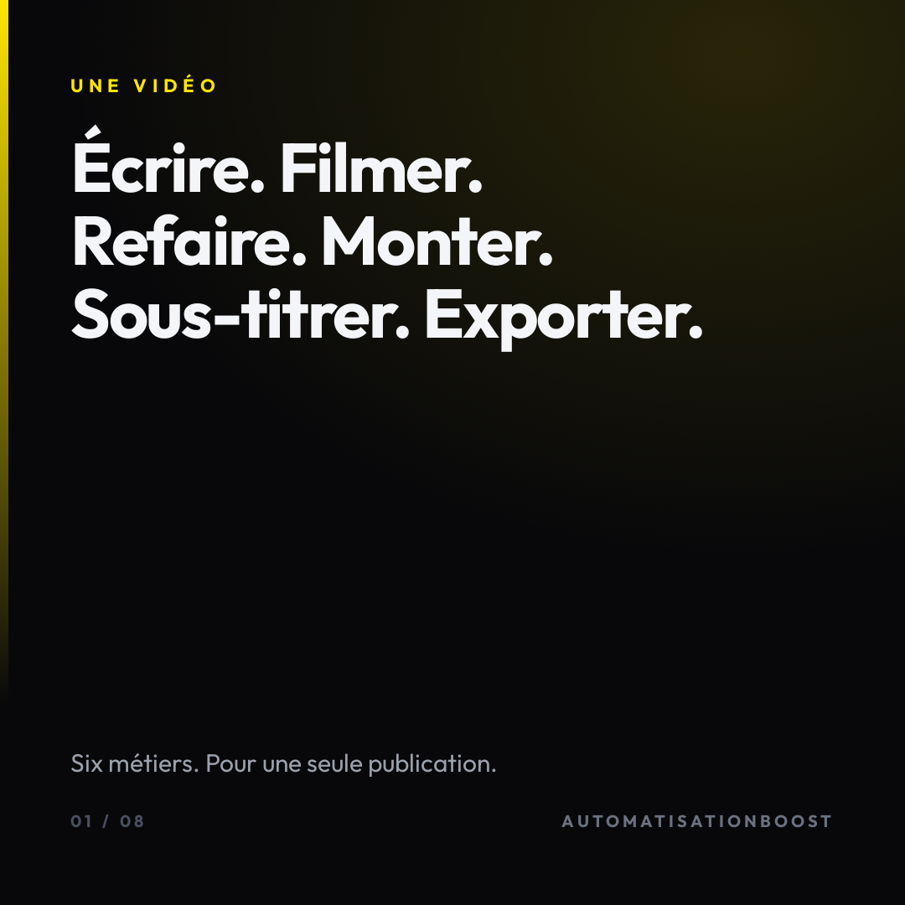
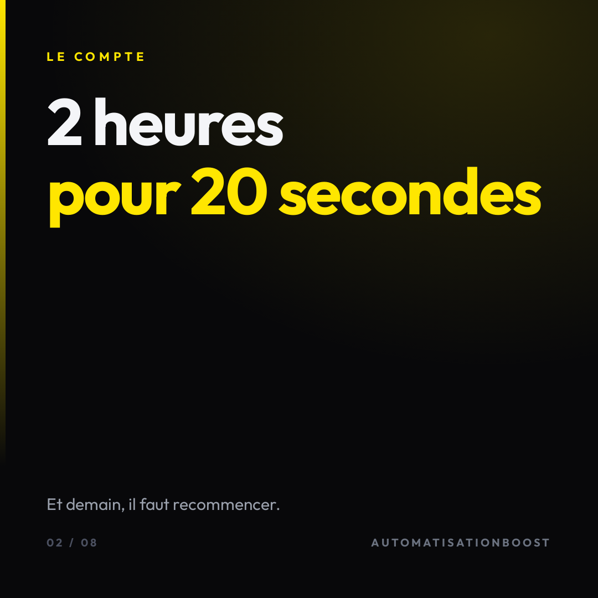
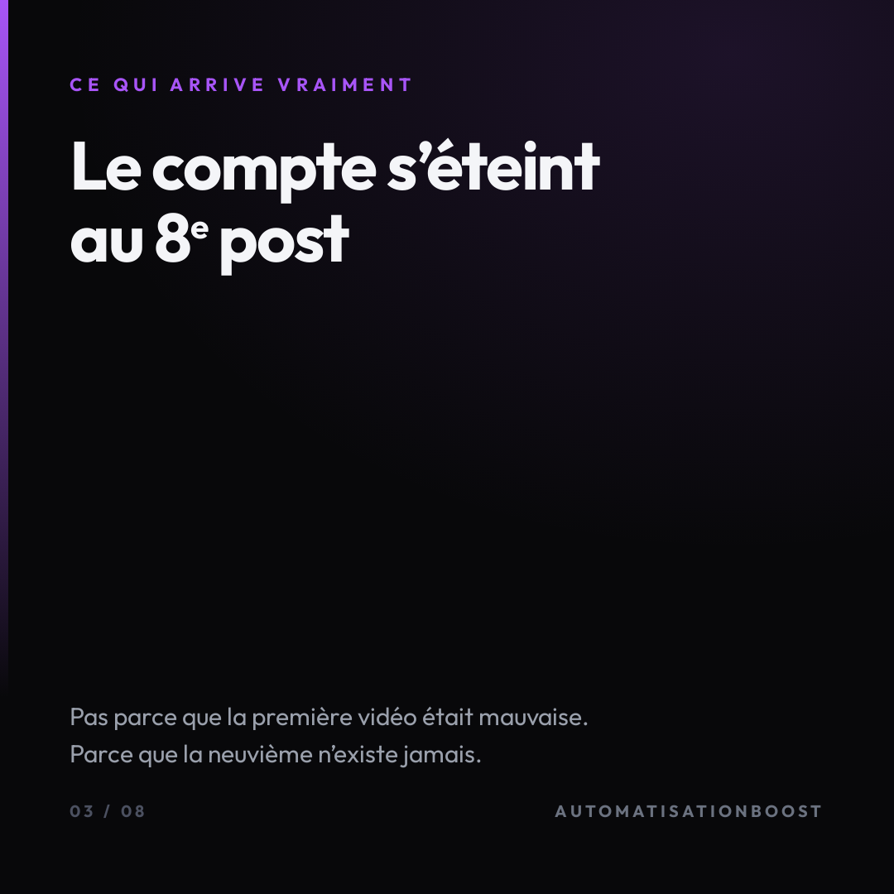
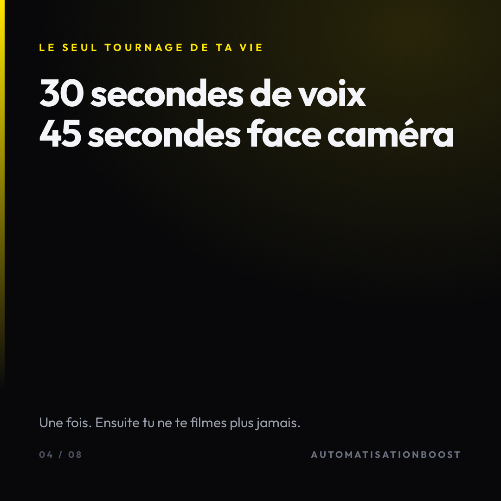
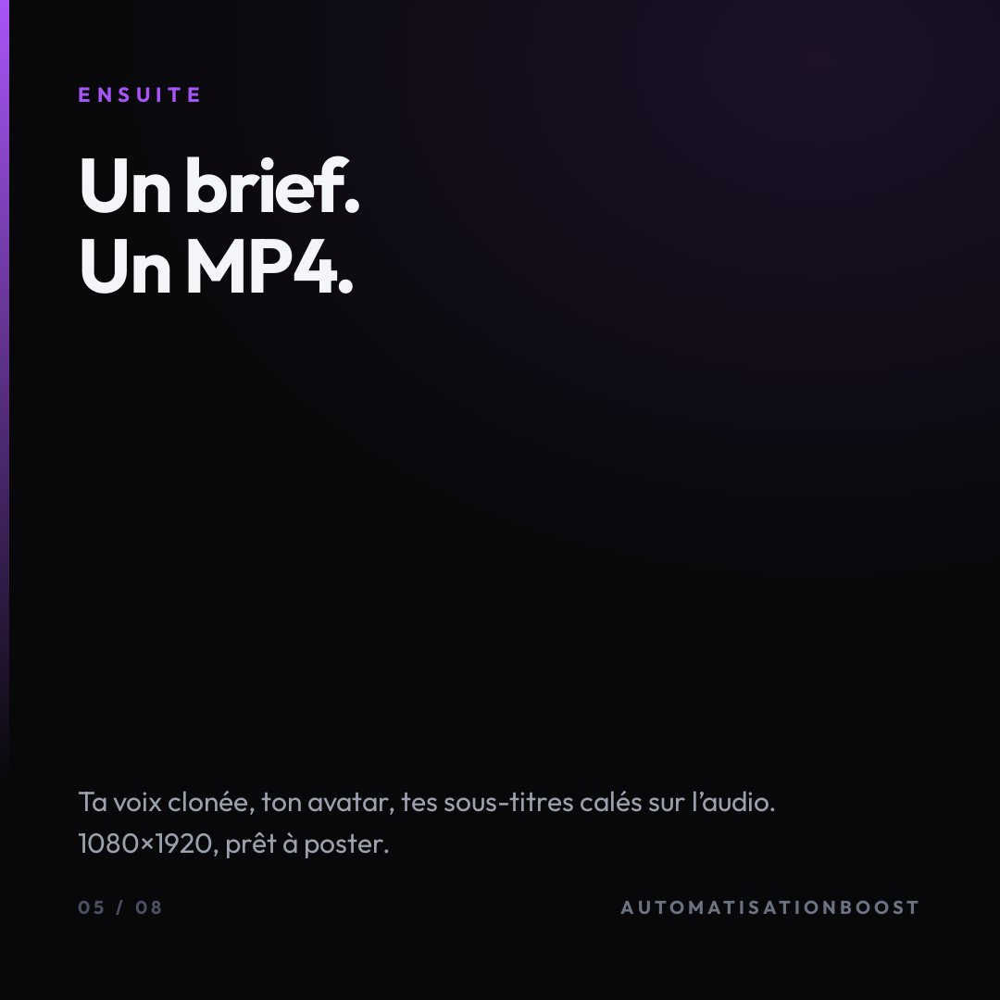
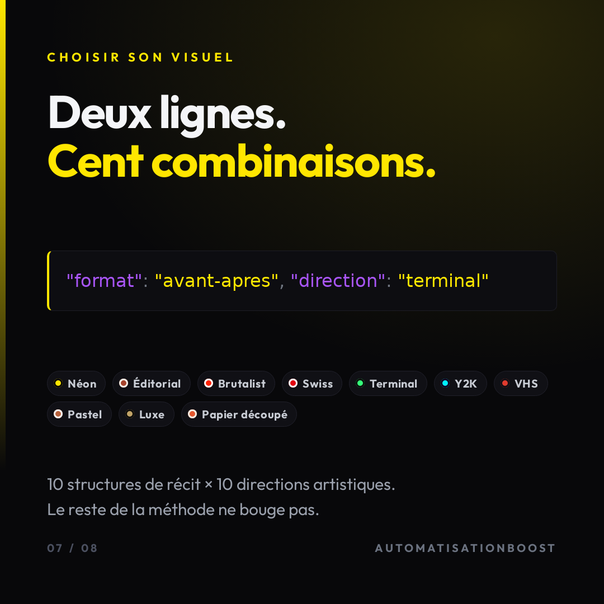
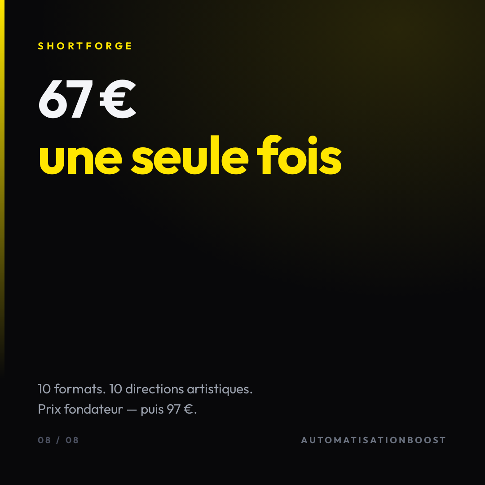

Fais glisser. Les cartes 06 et 07 sont les deux nouvelles.







Les six vignettes sont des images extraites de vidéos réellement publiées, prises dans six projets différents. Aucune n'est une maquette. Le libellé sous chacune nomme le format, pas le sujet : c'est le format qu'on vend.
Le bloc de code est le vrai contenu de config.json, et les dix pastilles
sont lues dans le fichier livré au client — la carte ne peut donc pas mentir le jour où le skill
change.
Deux réglages indépendants : la structure du récit (10 formats) et la direction artistique (10 palettes + polices + registres d'animation). Soit cent combinaisons.
La page de vente promet « 10 formats, 10 directions artistiques » depuis le début. Le skill livré n'en contenait aucun des deux. Ni les formats, ni les directions n'existaient nulle part dans le fichier téléchargé par le client.
La pub ShortForge que tu viens de mettre en ligne envoie vers cette page. Je les ai donc
écrits pour de bon : formats.md (dix structures de récit détaillées) et
directions.json (dix directions complètes, contraste vérifié pour chacune). Les deux
archives de téléchargement ont été refaites.